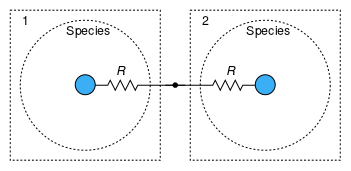

Table of Contents
- User's Guide
- BCs
- Sensors
- Assemblies
- Regions
- Subregions
- Connectors
- Characteristics
- Units
- Quantities
- BaseClasses
Download
- Latest: FCSys-2.0.zip (**Please check back soon or contact kdavies4 at gmail.com.)

| Name | Description |
|---|---|
| C | |
| C19HF37O5S | |
| e- | |
| H+ | |
| H2 | |
| H2O | |
| N2 | |
| O2 | |
| Solid species (inert and stagnant) | |
| Incompressible species | |
| Model for single-species exchange, transport, and storage of material, linear momentum, and energy | |
| Base classes (not for direct use) |
 FCSys.Subregions.Species.SpeciesSolid
FCSys.Subregions.Species.SpeciesSolid

Assumptions:
For more information, see the Species model.
Extends from SpeciesIncompressible (Incompressible species).
| Type | Name | Default | Description |
|---|---|---|---|
| Geometry | |||
| Length | Lstar | Characteristic length for exchange (L★) [l] | |
| NumberAbsolute | k[Axis] | {1,1,1} | Area fill factor for transport (k) [1] |
| Material properties | |||
| replaceable package Data | Characteristic | Characteristic data | |
| Fusivity | Xi | Modelica.Constants.inf | Fusivity (Ξ) [T/l2] |
| Fluidity | F | 0 | Fluidity [l.T/m] |
| ResistivityThermal | R | Data.R(T, 1/rho) | Thermal resistivity |
| Assumptions | |||
| Boolean | overrideEOS | false | Override the equation of state with the value of ρIC |
| Boolean | inclLin[Axis] | {true,false,false} | true, if each component of linear momentum is included (Do not adjust here.) |
| Prescribed states (via initialization parameters) | |||
| Boolean | setPartNum | true | Particle number |
| Boolean | setVelX | true | X-axis component of velocity |
| Boolean | setVelY | true | Y-axis component of velocity |
| Boolean | setVelZ | true | Z-axis component of velocity |
| Boolean | setTemp | false | Temperature |
| Initialization | |||
| Scalar properties | |||
| InitMethScalar | initMethPartNum | InitMethScalar.Volume | Method of initializing the particle number |
| InitMethScalar | initMethTemp | InitMethScalar.Temperature | Method of initializing the temperature |
| Amount | N_IC | Initial particle number (NIC) [N] | |
| Current | derN_IC | 0 | Initial rate of particle number ((∂N/∂t)IC) [N/T] |
| AmountVolumic | rho_IC | Initial volumic amount (ρIC) [N/l3] | |
| AmountVolumicRate | derrho_IC | 0 | Initial rate of volumic amount ((∂ρ/∂t)IC) [N/(l3.T)] |
| Volume | V_IC | Initial volume (VIC) [l3] | |
| VolumeRate | derV_IC | 0 | Initial rate of volume ((∂V/∂t)IC) [l3/T] |
| PressureAbsolute | p_IC | Initial pressure (pIC) [m/(l.T2)] | |
| PressureRate | derp_IC | 0 | Initial rate of pressure ((∂p/∂t)IC) [m/(l.T3)] |
| TemperatureAbsolute | T_IC | Initial temperature (TIC) | |
| TemperatureRate | derT_IC | 0 | Initial rate of temperature (∂T/∂t)IC) |
| NumberAbsolute | s_IC | Initial specific entropy (sIC) [1] | |
| NumberRate | ders_IC | 0 | Initial rate of specific entropy ((∂s/∂t)IC) [1/T] |
| Potential | h_IC | Initial specific enthalpy (hIC) [l2.m/(N.T2)] | |
| PotentialRate | derh_IC | 0 | Initial rate of specific enthalpy ((∂h/∂t)IC) [l2.m/(N.T3)] |
| Potential | mu_IC | Initial electrochemical potential (μIC) [l2.m/(N.T2)] | |
| PotentialRate | dermu_IC | 0 | Initial rate of electrochemical potential ((∂μ/∂t)IC) [l2.m/(N.T3)] |
| Current | Ndot_IC | 0 | Initial reaction rate (ṄIC) [N/T] |
| Velocity | |||
| InitMethVelocity | initMethX | InitMethVelocity.Velocity | Method of initializing the x-axis component |
| InitMethVelocity | initMethY | InitMethVelocity.Velocity | Method of initializing the y-axis component |
| InitMethVelocity | initMethZ | InitMethVelocity.Velocity | Method of initializing the z-axis component |
| Velocity | phi_IC[Axis] | zeros(3) | Initial velocity (φIC) [l/T] |
| Type | Name | Description |
|---|---|---|
| ChemicalOutput | chemical | Connector to exchange material while advecting linear momentum and energy |
| Inert | common | Connector for direct mechanical and thermal coupling of multiple species |
| InertDalton | inert | Connector to exchange linear momentum and heat by diffusion, with additivity of pressure |
model SpeciesSolid "Solid species (inert and stagnant)" extends SpeciesIncompressible( final Xi=Modelica.Constants.inf, final F=0, final upstreamX, final upstreamY, final upstreamZ, final setPartNum=true, final setVelX=true, final setVelY=true, final setVelZ=true, final initMethX=InitMethVelocity.Velocity, final initMethY=InitMethVelocity.Velocity, final initMethZ=InitMethVelocity.Velocity, final Ndot_IC=0, final phi_IC=zeros(3), final derphi_IC, final I_IC, final derI_IC, xNegative( thermoOpt=ThermoOpt.ClosedDiabatic, final inviscidY=true, final inviscidZ=true), xPositive( thermoOpt=ThermoOpt.ClosedDiabatic, final inviscidY=true, final inviscidZ=true), yNegative( thermoOpt=ThermoOpt.ClosedDiabatic, final inviscidZ=true, final inviscidX=true), yPositive( thermoOpt=ThermoOpt.ClosedDiabatic, final inviscidZ=true, final inviscidX=true), zNegative( thermoOpt=ThermoOpt.ClosedDiabatic, final inviscidX=true, final inviscidY=true), zPositive( thermoOpt=ThermoOpt.ClosedDiabatic, final inviscidX=true, final inviscidY=true)); // Note: upstreamX, upstreamY, and upstreamZ don't matter since bulk // current is zero.end SpeciesSolid;
FCSys.Subregions.Species.SpeciesIncompressible
For more information, see the Species model.
Extends from Species (Model for single-species exchange, transport, and storage of material, linear momentum, and energy).
| Type | Name | Default | Description |
|---|---|---|---|
| Geometry | |||
| Length | Lstar | Characteristic length for exchange (L★) [l] | |
| NumberAbsolute | k[Axis] | {1,1,1} | Area fill factor for transport (k) [1] |
| Material properties | |||
| replaceable package Data | Characteristic | Characteristic data | |
| Fusivity | Xi | Data.Xi(T, 1/rho) | Fusivity (Ξ) [T/l2] |
| Fluidity | F | Data.F(T, 1/rho) | Fluidity [l.T/m] |
| ResistivityThermal | R | Data.R(T, 1/rho) | Thermal resistivity |
| Assumptions | |||
| Boolean | overrideEOS | false | Override the equation of state with the value of ρIC |
| Boolean | inclLin[Axis] | {true,false,false} | true, if each component of linear momentum is included (Do not adjust here.) |
| Axes with upstream discretization | |||
| Boolean | upstreamX | true | X |
| Boolean | upstreamY | true | Y |
| Boolean | upstreamZ | true | Z |
| Prescribed states (via initialization parameters) | |||
| Boolean | setPartNum | false | Particle number |
| Boolean | setVelX | false | X-axis component of velocity |
| Boolean | setVelY | false | Y-axis component of velocity |
| Boolean | setVelZ | false | Z-axis component of velocity |
| Boolean | setTemp | false | Temperature |
| Characteristics of the faces (click to edit) | |||
| FaceX | xNegative | Negative face along the x axis | |
| FaceX | xPositive | Positive face along the x axis | |
| FaceY | yNegative | Negative face along the y axis | |
| FaceY | yPositive | Positive face along the y axis | |
| FaceZ | zNegative | Negative face along the z axis | |
| FaceZ | zPositive | Positive face along the z axis | |
| Initialization | |||
| Scalar properties | |||
| InitMethScalar | initMethPartNum | InitMethScalar.Volume | Method of initializing the particle number |
| InitMethScalar | initMethTemp | InitMethScalar.Temperature | Method of initializing the temperature |
| Amount | N_IC | Initial particle number (NIC) [N] | |
| Current | derN_IC | 0 | Initial rate of particle number ((∂N/∂t)IC) [N/T] |
| AmountVolumic | rho_IC | Initial volumic amount (ρIC) [N/l3] | |
| AmountVolumicRate | derrho_IC | 0 | Initial rate of volumic amount ((∂ρ/∂t)IC) [N/(l3.T)] |
| Volume | V_IC | Initial volume (VIC) [l3] | |
| VolumeRate | derV_IC | 0 | Initial rate of volume ((∂V/∂t)IC) [l3/T] |
| PressureAbsolute | p_IC | Initial pressure (pIC) [m/(l.T2)] | |
| PressureRate | derp_IC | 0 | Initial rate of pressure ((∂p/∂t)IC) [m/(l.T3)] |
| TemperatureAbsolute | T_IC | Initial temperature (TIC) | |
| TemperatureRate | derT_IC | 0 | Initial rate of temperature (∂T/∂t)IC) |
| NumberAbsolute | s_IC | Initial specific entropy (sIC) [1] | |
| NumberRate | ders_IC | 0 | Initial rate of specific entropy ((∂s/∂t)IC) [1/T] |
| Potential | h_IC | Initial specific enthalpy (hIC) [l2.m/(N.T2)] | |
| PotentialRate | derh_IC | 0 | Initial rate of specific enthalpy ((∂h/∂t)IC) [l2.m/(N.T3)] |
| Potential | mu_IC | Initial electrochemical potential (μIC) [l2.m/(N.T2)] | |
| PotentialRate | dermu_IC | 0 | Initial rate of electrochemical potential ((∂μ/∂t)IC) [l2.m/(N.T3)] |
| Current | Ndot_IC | 0 | Initial reaction rate (ṄIC) [N/T] |
| Velocity | |||
| InitMethVelocity | initMethX | InitMethVelocity.Velocity | Method of initializing the x-axis component |
| InitMethVelocity | initMethY | InitMethVelocity.Velocity | Method of initializing the y-axis component |
| InitMethVelocity | initMethZ | InitMethVelocity.Velocity | Method of initializing the z-axis component |
| Velocity | phi_IC[Axis] | {0,0,0} | Initial velocity (φIC) [l/T] |
| Acceleration | derphi_IC[Axis] | {0,0,0} | Initial acceleration ((∂φ/∂t)IC) [l/T2] |
| Current | I_IC[Axis] | {0,0,0} | Initial current (IIC) [N/T] |
| CurrentRate | derI_IC[Axis] | {0,0,0} | Initial rate of current ((∂I/∂t)IC) [N/T2] |
| Type | Name | Description |
|---|---|---|
| ChemicalOutput | chemical | Connector to exchange material while advecting linear momentum and energy |
| Inert | common | Connector for direct mechanical and thermal coupling of multiple species |
| InertDalton | inert | Connector to exchange linear momentum and heat by diffusion, with additivity of pressure |
| Assumptions | ||
| Characteristics of the faces (click to edit) | ||
| FaceX | xNegative | Negative face along the x axis |
| FaceX | xPositive | Positive face along the x axis |
| FaceY | yNegative | Negative face along the y axis |
| FaceY | yPositive | Positive face along the y axis |
| FaceZ | zNegative | Negative face along the z axis |
| FaceZ | zPositive | Positive face along the z axis |
model SpeciesIncompressible "Incompressible species" extends Species(initMethPartNum=InitMethScalar.Volume);end SpeciesIncompressible;
FCSys.Subregions.Species.Species
This model is based on the following fixed assumptions. Other assumptions are optional via the parameters.
Figure 1 shows the manner in which instances of Species models (derived from this model) are connected within a Subregion. The generalized resistances (R) affect the flow rates of linear momentum and heat associated with differences in velocity and temperature (respectively) between each species and a common node. This exchange is diffusive.
Linear momentum and enthalpy are advected as material is exchanged in a chemical reaction. This occurs at the velocity and massic enthalpy of the reactants (source species). Resistance is not involved directly. When the species are connected through a Reaction model, the material states are directly coupled according to the chemical equilibrium of the reaction. This reduces the DAE index by one. The reaction rate is determined solely by the dynamics of the transport equations.

Figure 1: Exchange of a quantity (linear momentum or heat) among species
(A, B, and C) within a subregion.
Figure 2 shows how Species
instances of the same type are connected between neighboring
Subregion instances. Material,
linear momentum, and heat are transported by both advection and diffusion.
Upstream discretization is applied if it is enabled (via the upstreamX,
etc. parameters).

Figure 2: Transport of a quantity associated with the same species
between subregions (1 and 2).
Within a phase, Species instances are combined by Dalton's law (see the InertDalton connector), as shown in Figure 3a. The pressures are additive, and each species is assumed to exist at the volume of the phase. Within a subregion, phases are combined by Amagat's law (see the InertAmagat connector), as shown in Figure 3b. The volumes are additive, and each species is assumed to exist at the pressure of the subregion.

a: Pressures of species (A, B, and C) are additive within a phase. |

b: Volumes of phases (I, II, and III) are additive within a subregion. |
| Figure 3: Methods of sharing pressure and volume. | |
The following notes apply to the parameters:
final so that index reduction may be performed.
If two Species instances
are connected through their exchange connectors
(chemical or inert) or faces (xNegative, xPositive, etc.) and both have zero resistivities for a
quantity, then index reduction is necessary.setPartNum, setVelX, setVelY, or setVelZ is
true, then there may be a secondary effect on the energy conservation equation
and thus temperature.
In that case, it may be helpful to set setTemp to true so that
the energy conservation equation is not imposed.setPartNum to true and initMethPartNum
to InitMethScalar.Pressure for the species. In general, only one incompressible
species can be included if there are no incompressible species.start values of the initial conditions for pressure and temperature
(pIC and TIC) are the global default pressure and
temperature (via the outer instance of the Environment model).
The start values of the initial conditions for
other intensive properties (ρIC, sIC, hIC, and
μIC) are related to the initial pressure and temperature
by the characteristics of the species. The start value of the
initial condition for the extensive volume (VIC) is the volume of the
subregion, and the start value for particle number (NIC)
is related to it via the characteristics (in Data) and the initial pressure and temperature.
In order to apply other values for any of these initial conditions,
it may be necessary to do so before translating the model.overrideEOS parameter, it is possible to specify that
the volumic amount (i.e., molar concentration) and thus the amount or particle number is
zero.
Set overrideEOS = true and rho_IC = 0; then,
the states for material, linear momentum, and energy will be eliminated. If a species
is included with this setting, then there must be an external reference
for electrochemical potential (i.e., ground). There must be at least one other
species in the subregion or the velocity must be set (e.g.,
setVelX = true).In evaluating the dynamics of a phase, it is usually assumed that all of the species
exist at the same temperature and bulk velocity. The time constants that govern the
temperatures/heat capacities of the species and heat flow rates among them are usually
much shorter than the time span of interest.
This assumption can be applied in the model by connecting the common
connectors of the species. It will cause index reduction during translation.
In the variables that relate to transport, the first index is the axis and the second index is the side. The sides are ordered from negative to positive, according to the Side enumeration. Shear velocity and force are additionally indexed by the orientation of the momentum with respect to the face. The orientations are ordered in Cartesian space starting with the axis after the normal face, according to the Orientation enumeration.
| Type | Name | Default | Description |
|---|---|---|---|
| Geometry | |||
| Length | Lstar | Characteristic length for exchange (L★) [l] | |
| NumberAbsolute | k[Axis] | {1,1,1} | Area fill factor for transport (k) [1] |
| Material properties | |||
| Fusivity | Xi | Data.Xi(T, 1/rho) | Fusivity (Ξ) [T/l2] |
| Fluidity | F | Data.F(T, 1/rho) | Fluidity [l.T/m] |
| ResistivityThermal | R | Data.R(T, 1/rho) | Thermal resistivity |
| Assumptions | |||
| Boolean | overrideEOS | false | Override the equation of state with the value of ρIC |
| Boolean | inclLin[Axis] | {true,false,false} | true, if each component of linear momentum is included (Do not adjust here.) |
| Axes with upstream discretization | |||
| Boolean | upstreamX | true | X |
| Boolean | upstreamY | true | Y |
| Boolean | upstreamZ | true | Z |
| Prescribed states (via initialization parameters) | |||
| Boolean | setPartNum | false | Particle number |
| Boolean | setVelX | false | X-axis component of velocity |
| Boolean | setVelY | false | Y-axis component of velocity |
| Boolean | setVelZ | false | Z-axis component of velocity |
| Boolean | setTemp | false | Temperature |
| Characteristics of the faces (click to edit) | |||
| FaceX | xNegative | Negative face along the x axis | |
| FaceX | xPositive | Positive face along the x axis | |
| FaceY | yNegative | Negative face along the y axis | |
| FaceY | yPositive | Positive face along the y axis | |
| FaceZ | zNegative | Negative face along the z axis | |
| FaceZ | zPositive | Positive face along the z axis | |
| Initialization | |||
| Scalar properties | |||
| InitMethScalar | initMethPartNum | InitMethScalar.Pressure | Method of initializing the particle number |
| InitMethScalar | initMethTemp | InitMethScalar.Temperature | Method of initializing the temperature |
| Amount | N_IC | Initial particle number (NIC) [N] | |
| Current | derN_IC | 0 | Initial rate of particle number ((∂N/∂t)IC) [N/T] |
| AmountVolumic | rho_IC | Initial volumic amount (ρIC) [N/l3] | |
| AmountVolumicRate | derrho_IC | 0 | Initial rate of volumic amount ((∂ρ/∂t)IC) [N/(l3.T)] |
| Volume | V_IC | Initial volume (VIC) [l3] | |
| VolumeRate | derV_IC | 0 | Initial rate of volume ((∂V/∂t)IC) [l3/T] |
| PressureAbsolute | p_IC | Initial pressure (pIC) [m/(l.T2)] | |
| PressureRate | derp_IC | 0 | Initial rate of pressure ((∂p/∂t)IC) [m/(l.T3)] |
| TemperatureAbsolute | T_IC | Initial temperature (TIC) | |
| TemperatureRate | derT_IC | 0 | Initial rate of temperature (∂T/∂t)IC) |
| NumberAbsolute | s_IC | Initial specific entropy (sIC) [1] | |
| NumberRate | ders_IC | 0 | Initial rate of specific entropy ((∂s/∂t)IC) [1/T] |
| Potential | h_IC | Initial specific enthalpy (hIC) [l2.m/(N.T2)] | |
| PotentialRate | derh_IC | 0 | Initial rate of specific enthalpy ((∂h/∂t)IC) [l2.m/(N.T3)] |
| Potential | mu_IC | Initial electrochemical potential (μIC) [l2.m/(N.T2)] | |
| PotentialRate | dermu_IC | 0 | Initial rate of electrochemical potential ((∂μ/∂t)IC) [l2.m/(N.T3)] |
| Current | Ndot_IC | 0 | Initial reaction rate (ṄIC) [N/T] |
| Velocity | |||
| InitMethVelocity | initMethX | InitMethVelocity.Velocity | Method of initializing the x-axis component |
| InitMethVelocity | initMethY | InitMethVelocity.Velocity | Method of initializing the y-axis component |
| InitMethVelocity | initMethZ | InitMethVelocity.Velocity | Method of initializing the z-axis component |
| Velocity | phi_IC[Axis] | {0,0,0} | Initial velocity (φIC) [l/T] |
| Acceleration | derphi_IC[Axis] | {0,0,0} | Initial acceleration ((∂φ/∂t)IC) [l/T2] |
| Current | I_IC[Axis] | {0,0,0} | Initial current (IIC) [N/T] |
| CurrentRate | derI_IC[Axis] | {0,0,0} | Initial rate of current ((∂I/∂t)IC) [N/T2] |
| Type | Name | Description |
|---|---|---|
| ChemicalOutput | chemical | Connector to exchange material while advecting linear momentum and energy |
| Inert | common | Connector for direct mechanical and thermal coupling of multiple species |
| InertDalton | inert | Connector to exchange linear momentum and heat by diffusion, with additivity of pressure |
| Assumptions | ||
| Characteristics of the faces (click to edit) | ||
| FaceX | xNegative | Negative face along the x axis |
| FaceX | xPositive | Positive face along the x axis |
| FaceY | yNegative | Negative face along the y axis |
| FaceY | yPositive | Positive face along the y axis |
| FaceZ | zNegative | Negative face along the z axis |
| FaceZ | zPositive | Positive face along the z axis |
model Species "Model for single-species exchange, transport, and storage of material, linear momentum, and energy" //extends FCSys.BaseClasses.Icons.Names.Top1; // Geometric parameters outer parameter Q.Length L[Axis](each min=Modelica.Constants.small) "Length"; outer parameter Q.Area A[Axis] "Cross-sectional area"; parameter Q.Length Lstar( min=Modelica.Constants.small, nominal=10*U.m, start=1e3*product(L)^(1/3)) "Characteristic length for exchange (L★)"; parameter Q.NumberAbsolute k[Axis]( each min=Modelica.Constants.small, each final nominal=1) = {1,1,1} "Area fill factor for transport (k)"; // Material properties replaceable package Data = FCSys.Characteristics.BaseClasses.Characteristic constrainedby FCSys.Characteristics.BaseClasses.Characteristic "Characteristic data"; // Assumptions // ----------- // General parameter Boolean overrideEOS=false "Override the equation of state with the value of ρIC"; parameter Boolean inclLin[Axis]={true,false,false} "true, if each component of linear momentum is included (Do not adjust here.)"; // Even though this parameter is set as final within the constrainedby // clauses of the Phase models, Dymola 7.4 still shows it in the // parameter dialog (hence the "Do not adjust"). // // Upstream discretization parameter Boolean upstreamX=true "X"; parameter Boolean upstreamY=true "Y"; parameter Boolean upstreamZ=true "Z"; // // Dynamics parameter Boolean setPartNum=false "Particle number"; parameter Boolean setVelX=false "X-axis component of velocity"; parameter Boolean setVelY=false "Y-axis component of velocity"; parameter Boolean setVelZ=false "Z-axis component of velocity"; parameter Boolean setTemp=false "Temperature"; // Initialization parameters for scalar properties parameter BaseClasses.InitMethScalar initMethPartNum=InitMethScalar.Pressure "Method of initializing the particle number"; parameter BaseClasses.InitMethScalar initMethTemp=InitMethScalar.Temperature "Method of initializing the temperature"; parameter Q.Amount N_IC(start=V_IC*rho_IC) "Initial particle number (NIC)"; // Note: This parameter is left enabled even it isn't used to // explicitly initialize any states, since it's used as a guess value. // Similar notes apply to some other initial conditions below. parameter Q.Current derN_IC=0 "Initial rate of particle number ((∂N/∂t)IC)"; // Note: Dymola 7.4 doesn't recognize enumerations in the dialog enable // option, e.g., // enable=initMethPartNum == InitMethScalar.AmountRate. // Therefore, the values of the enumerations are specified numerically for // this initial condition and some others below. parameter Q.AmountVolumic rho_IC(min=if overrideEOS then 0 else Modelica.Constants.small, start=1/Data.v_Tp(T_IC, p_IC)) "Initial volumic amount (ρIC)"; parameter Q.AmountVolumicRate derrho_IC=0 "Initial rate of volumic amount ((∂ρ/∂t)IC)"; parameter Q.Volume V_IC(start=product(L)) "Initial volume (VIC)"; parameter Q.VolumeRate derV_IC=0 "Initial rate of volume ((∂V/∂t)IC)"; parameter Q.PressureAbsolute p_IC(start=environment.p) "Initial pressure (pIC)"; parameter Q.PressureRate derp_IC=0 "Initial rate of pressure ((∂p/∂t)IC)"; parameter Q.TemperatureAbsolute T_IC(nominal=298.15*U.K, start=environment.T) "Initial temperature (TIC)"; parameter Q.TemperatureRate derT_IC=0 "Initial rate of temperature (∂T/∂t)IC)"; parameter Q.NumberAbsolute s_IC(min=Modelica.Constants.small, start=Data.s(T= T_IC, p=p_IC)) "Initial specific entropy (sIC)"; parameter Q.NumberRate ders_IC=0 "Initial rate of specific entropy ((∂s/∂t)IC)"; parameter Q.Potential h_IC(start=Data.h(T_IC, p_IC)) "Initial specific enthalpy (hIC)"; parameter Q.PotentialRate derh_IC=0 "Initial rate of specific enthalpy ((∂h/∂t)IC)"; parameter Q.Potential mu_IC(start=Data.g(T_IC, p_IC)) "Initial electrochemical potential (μIC)"; parameter Q.PotentialRate dermu_IC=0 "Initial rate of electrochemical potential ((∂μ/∂t)IC)"; parameter Q.Current Ndot_IC=0 "Initial reaction rate (ṄIC)"; // Initialization parameters for velocity parameter BaseClasses.InitMethVelocity initMethX=InitMethVelocity.Velocity "Method of initializing the x-axis component"; parameter BaseClasses.InitMethVelocity initMethY=InitMethVelocity.Velocity "Method of initializing the y-axis component"; parameter BaseClasses.InitMethVelocity initMethZ=InitMethVelocity.Velocity "Method of initializing the z-axis component"; // Note: Dymola 7.4 doesn't provide pull-down lists for arrays of // enumerations; therefore, a parameter is used for each axis. parameter Q.Velocity phi_IC[Axis]={0,0,0} "Initial velocity (φIC)"; parameter Q.Acceleration derphi_IC[Axis]={0,0,0} "Initial acceleration ((∂φ/∂t)IC)"; parameter Q.Current I_IC[Axis]={0,0,0} "Initial current (IIC)"; parameter Q.CurrentRate derI_IC[Axis]={0,0,0} "Initial rate of current ((∂I/∂t)IC)"; // Material properties Q.Fusivity Xi(nominal=1*U.s/U.cm^2) = Data.Xi(T, 1/rho) "Fusivity (Ξ)"; Q.Fluidity F(nominal=10*U.cm*U.s/U.g) = Data.F(T, 1/rho) "Fluidity"; Q.ResistivityThermal R(nominal=10*U.cm/U.A) = Data.R(T, 1/rho) "Thermal resistivity"; // Preferred states Q.Amount N( nominal=1*U.mol, final start=N_IC, final fixed=false, stateSelect=StateSelect.default) "Particle number"; // Note: The start value for this variable (and others below) isn't fixed // because the related initial condition is applied in the initial // equation section. Q.Velocity phi[n_lin]( each nominal=1*U.cm/U.s, final start=phi_IC[cartAxes], each final fixed=false, each stateSelect=StateSelect.prefer) "Velocity"; Q.TemperatureAbsolute T( nominal=298.15*U.K, final start=T_IC, final fixed=false, stateSelect=StateSelect.prefer) "Temperature"; // Aliases (for common terms) Q.Mass M(nominal=1*U.g, start=Data.m*N_IC) "Mass"; Q.Volume V( nominal=1*U.cm^3, final start=V_IC, final fixed=false) "Volume"; Q.PressureAbsolute p( nominal=1*U.atm, final start=p_IC, final fixed=false) "Pressure"; // **stateSelect=StateSelect.never // Note: In Dymola 7.4 StateSelect.never is necessary to avoid dynamic // state selection. **Is it still? Q.AmountVolumic rho( nominal=4*U.C/U.cm^3, final start=rho_IC, final fixed=false) "Molar density"; // Note: The reciprocal, specific volume (v), isn't included because // particle number (N) can be zero. Q.Potential h( nominal=1*U.V, final start=h_IC, final fixed=false) "Specific enthalpy"; Q.NumberAbsolute s( nominal=10, final start=s_IC, final fixed=false) "Specific entropy"; Q.Potential mu( nominal=1*U.V, final start=mu_IC, final fixed=false) "Electrochemical potential"; Q.Current I[n_lin]( each nominal=1*U.A, final start=I_IC[cartAxes], each final fixed=false) "Current"; Q.CapacityThermalSpecific c_V "Isochoric specific heat capacity"; // Auxiliary variables (for analysis) // ---------------------------------- // Misc. properties and conditions output Q.PressureAbsolute q[n_lin](each stateSelect=StateSelect.never) = Data.m *phi .* I ./ (2*A[cartAxes]) if environment.analysis "Dynamic pressure"; // // Capacitances output Q.Capacitance C(stateSelect=StateSelect.never) = if Data.isCompressible and not overrideEOS then -N*rho^2*(U.m^3/U.C)/Data.dp( v=1/rho, T=T, dv=U.m^3/U.C, dT=0) else 0 if environment.analysis "Chemical capacitance"; // Note: This is delN/delg at constant T and V. output Q.CapacityThermal C_V(stateSelect=StateSelect.never) = N*c_V if environment.analysis "Isochoric heat capacity"; // // Time constants output Q.Time tau_exch_mechanical(stateSelect=StateSelect.never) = alpha_F*N/ Lstar if environment.analysis "Time constant for mechanical exchange"; output Q.Time tau_exch_thermal(stateSelect=StateSelect.never) = alpha_R*N/ Lstar if environment.analysis "Time constant for thermal exchange"; output Q.Time tau_trans_mat[Axis](each stateSelect=StateSelect.never) = fill( alpha_Xi*N, 3) ./ Lstar_trans if environment.analysis "Time constants for material transport"; output Q.Time tau_trans_mech[Axis](each stateSelect=StateSelect.never) = fill (alpha_F*N, 3) ./ Lstar_trans if environment.analysis "Time constants for mechanical transport"; output Q.Time tau_trans_therm[Axis](each stateSelect=StateSelect.never) = fill(alpha_R*N, 3) ./ Lstar_trans if environment.analysis "Time constants for thermal transport"; // // Peclet numbers (only for the axes with linear momentum included; others are // zero) output Q.Number Pe_mat[n_lin](each stateSelect=StateSelect.never) = I* alpha_Xi ./ Lstar_trans[cartAxes] if environment.analysis "Material Peclet numbers"; output Q.Number Pe_mech[n_lin](each stateSelect=StateSelect.never) = I* alpha_F ./ Lstar_trans[cartAxes] if environment.analysis "Mechanical Peclet numbers"; output Q.Number Pe_therm[n_lin](each stateSelect=StateSelect.never) = I* alpha_R ./ Lstar_trans[cartAxes] if environment.analysis "Thermal Peclet numbers"; // // Bulk flow rates output Q.Force mphiI[n_lin, Orientation](each stateSelect=StateSelect.never) = {(if inclLin[cartWrap(cartAxes[axis] + orientation)] then Data.m*phi[ linAxes[cartWrap(cartAxes[axis] + orientation)]]*I[axis] else 0) for orientation in Orientation, axis in 1:n_lin} if n_lin > 0 and environment.analysis "Bulk rate of mechanical advection"; output Q.Power TsI[n_lin](each stateSelect=StateSelect.never) = T*s*I if environment.analysis "Bulk rate of thermal advection"; // // Linear momentum balance output Q.Force Ma[n_lin](each stateSelect=StateSelect.never) = M*(der(phi)/U.s - environment.a[cartAxes]) if environment.analysis "Acceleration force relative to the frame of reference (constant mass)"; output Q.Force f_exch_adv[n_lin](each stateSelect=StateSelect.never) = chemical.mPhidot - Data.m*phi*chemical.Ndot if environment.analysis "Acceleration force due to material (advective) exchange"; output Q.Force f_exch_diff[n_lin](each stateSelect=StateSelect.never) = common.mechanical.mPhidot + inert.mPhidot if environment.analysis "Friction from other species (diffusive exchange)"; output Q.Force f_trans_adv[n_lin](each stateSelect=StateSelect.never) = {Data.m *Delta(Data.v_Tp(T_face[cartAxes[axis], :], p_face[cartAxes[axis], :]) .* Ndot_face[cartAxes[axis], :] .^ 2)/A[cartAxes[axis]] + sum(Data.m*Sigma( phi_face[cartWrap(cartAxes[axis] - orientation), :, orientation] .* Ndot_face[cartWrap(cartAxes[axis] - orientation), :]) for orientation in Orientation) for axis in 1:n_lin} if environment.analysis "Acceleration force due to material (advective) transport"; output Q.Force f_trans_diff[n_lin](each stateSelect=StateSelect.never) = {A[ cartAxes[axis]]*Delta(p_face[cartAxes[axis], :]) + sum(Sigma(mPhidot_face[ cartWrap(cartAxes[axis] - orientation), :, orientation]) for orientation in Orientation) for axis in 1:n_lin} if environment.analysis "Friction from other subregions (diffusive transport; includes volume viscosity)"; // // Energy balance output Q.Power Ndere(stateSelect=StateSelect.never) = (N*(der(h) + Data.m*der (phi*phi)/2) - V*der(p))/U.s if environment.analysis "Rate of energy storage (internal and kinetic) at constant mass"; output Q.Power Wdot_exch(stateSelect=StateSelect.never) = -((Data.m*(chemical.hbar - phi*phi/2) - h)*chemical.Ndot + chemical.phi*chemical.mPhidot/2) if environment.analysis "Relative rate of work (internal, flow, and kinetic) done by chemical exchange (advection)"; output Q.Power Qdot_gen_exch(stateSelect=StateSelect.never) = phi*common.mechanical.mPhidot + inert.phi*inert.mPhidot if environment.analysis "Rate of heat generation due to friction with other species"; output Q.Power Qdot_exch(stateSelect=StateSelect.never) = common.thermal.Qdot + inert.Qdot if environment.analysis "Rate of thermal conduction from other species"; output Q.Power Wdot_trans(stateSelect=StateSelect.never) = -sum(sum((Data.h( T_face[axis, side], p_face[axis, side]) + Data.m*((Data.v_Tp(T_face[axis, side], p_face[axis, side])*Ndot_face[axis, side]/A[axis])^2 + phi_face[axis, side, :]*phi_face[axis, side, :])/2 - h - Data.m*phi*phi/2)*Ndot_face[axis, side] for side in Side) for axis in Axis) if environment.analysis "Relative rate of work (internal, flow, and kinetic) done by material transport (advection)"; output Q.Power Qdot_gen_trans(stateSelect=StateSelect.never) = sum(phi_face .* mPhidot_face) if environment.analysis "Rate of heat generation due to friction with other subregions"; output Q.Power Qdot_trans(stateSelect=StateSelect.never) = sum(Qdot_face) if environment.analysis "Rate of thermal conduction from other subregions"; // Note: These auxiliary variables should not be used as states; the // structure of the problem should not change if they are included.FCSys.Connectors.ChemicalOutput chemical( final n_lin=n_lin, final m=Data.m, final formula=Data.formula, muPerT(final start=mu_IC/T_IC), phi(final start=phi_IC[cartAxes]), Ndot(final start=Ndot_IC,final fixed=false), hbar(final start=Data.h(T_IC, p_IC)/Data.m, final fixed=false)) "Connector to exchange material while advecting linear momentum and energy"; FCSys.Connectors.Inert common( final n_lin=n_lin, mechanical(phi(final start=phi_IC[cartAxes], each final fixed=false)), thermal(T(final start=T_IC,final fixed=false))) "Connector for direct mechanical and thermal coupling of multiple species"; FCSys.Connectors.InertDalton inert( final n_lin=n_lin, V( min=0, final start=V_IC, final fixed=false), p(final start=p_IC, final fixed=false), phi(start=phi_IC[cartAxes]), T(start=T_IC)) "Connector to exchange linear momentum and heat by diffusion, with additivity of pressure"; FCSys.Connectors.FaceX xNegative( thermoOpt=if inclLin[Axis.x] then ThermoOpt.OpenDiabatic else ThermoOpt.ClosedDiabatic, inviscidY=not inclLin[Axis.y], inviscidZ=not inclLin[Axis.z], material(final rho(start=rho_IC) = rho_face[Axis.x, Side.n], final Ndot( start=I_IC[Axis.x]) = Ndot_face[Axis.x, Side.n]), mechanicalY(final phi(start=phi_IC[Axis.y]) = phi_face[Axis.x, Side.n, Orientation.following], final mPhidot=mPhidot_face[Axis.x, Side.n, Orientation.following]), mechanicalZ(final phi(start=phi_IC[Axis.z]) = phi_face[Axis.x, Side.n, Orientation.preceding], final mPhidot=mPhidot_face[Axis.x, Side.n, Orientation.preceding]), thermal(final T(start=T_IC) = T_face[Axis.x, Side.n],final Qdot(start=0) = Qdot_face[Axis.x, Side.n])) "Negative face along the x axis"; FCSys.Connectors.FaceX xPositive( thermoOpt=if inclLin[Axis.x] then ThermoOpt.OpenDiabatic else ThermoOpt.ClosedDiabatic, inviscidY=not inclLin[Axis.y], inviscidZ=not inclLin[Axis.z], material(final rho(start=rho_IC) = rho_face[Axis.x, Side.p], final Ndot( start=-I_IC[Axis.x]) = Ndot_face[Axis.x, Side.p]), mechanicalY(final phi(start=phi_IC[Axis.y]) = phi_face[Axis.x, Side.p, Orientation.following], final mPhidot=mPhidot_face[Axis.x, Side.p, Orientation.following]), mechanicalZ(final phi(start=phi_IC[Axis.z]) = phi_face[Axis.x, Side.p, Orientation.preceding], final mPhidot=mPhidot_face[Axis.x, Side.p, Orientation.preceding]), thermal(final T(start=T_IC) = T_face[Axis.x, Side.p],final Qdot(start=0) = Qdot_face[Axis.x, Side.p])) "Positive face along the x axis"; FCSys.Connectors.FaceY yNegative( thermoOpt=if inclLin[Axis.y] then ThermoOpt.OpenDiabatic else ThermoOpt.ClosedDiabatic, inviscidZ=not inclLin[Axis.z], inviscidX=not inclLin[Axis.x], material(final rho(start=rho_IC) = rho_face[Axis.y, Side.n], final Ndot( start=I_IC[Axis.y]) = Ndot_face[Axis.y, Side.n]), mechanicalZ(final phi(start=phi_IC[Axis.z]) = phi_face[Axis.y, Side.n, Side.n], final mPhidot=mPhidot_face[Axis.y, Side.n, Orientation.following]), mechanicalX(final phi(start=phi_IC[Axis.x]) = phi_face[Axis.y, Side.n, Side.p], final mPhidot=mPhidot_face[Axis.y, Side.n, Orientation.preceding]), thermal(final T(start=T_IC) = T_face[Axis.y, Side.n],final Qdot(start=0) = Qdot_face[Axis.y, Side.n])) "Negative face along the y axis"; FCSys.Connectors.FaceY yPositive( thermoOpt=if inclLin[Axis.y] then ThermoOpt.OpenDiabatic else ThermoOpt.ClosedDiabatic, inviscidZ=not inclLin[Axis.z], inviscidX=not inclLin[Axis.x], material(final rho(start=rho_IC) = rho_face[Axis.y, Side.p],final Ndot( start=-I_IC[Axis.y]) = Ndot_face[Axis.y, Side.p]), mechanicalZ(final phi(start=phi_IC[Axis.z]) = phi_face[Axis.y, Side.p, Orientation.following], final mPhidot=mPhidot_face[Axis.y, Side.p, Orientation.following]), mechanicalX(final phi(start=phi_IC[Axis.x]) = phi_face[Axis.y, Side.p, Orientation.preceding], final mPhidot=mPhidot_face[Axis.y, Side.p, Orientation.preceding]), thermal(final T(start=T_IC) = T_face[Axis.y, Side.p],final Qdot(start=0) = Qdot_face[Axis.y, Side.p])) "Positive face along the y axis"; FCSys.Connectors.FaceZ zNegative( thermoOpt=if inclLin[Axis.z] then ThermoOpt.OpenDiabatic else ThermoOpt.ClosedDiabatic, inviscidX=not inclLin[Axis.x], inviscidY=not inclLin[Axis.y], material(final rho(start=rho_IC) = rho_face[Axis.z, Side.n], final Ndot( start=I_IC[Axis.z]) = Ndot_face[Axis.z, Side.n]), mechanicalX(final phi(start=phi_IC[Axis.x]) = phi_face[Axis.z, Side.n, Orientation.following], final mPhidot=mPhidot_face[Axis.z, Side.n, Orientation.following]), mechanicalY(final phi(start=phi_IC[Axis.y]) = phi_face[Axis.z, Side.n, Orientation.preceding], final mPhidot=mPhidot_face[Axis.z, Side.n, Orientation.preceding]), thermal(final T(start=T_IC) = T_face[Axis.z, Side.n],final Qdot(start=0) = Qdot_face[Axis.z, Side.n])) "Negative face along the z axis"; FCSys.Connectors.FaceZ zPositive( thermoOpt=if inclLin[Axis.z] then ThermoOpt.OpenDiabatic else ThermoOpt.ClosedDiabatic, inviscidX=not inclLin[Axis.x], inviscidY=not inclLin[Axis.y], material(final rho(start=rho_IC) = rho_face[Axis.z, Side.p], final Ndot( start=-I_IC[Axis.z]) = Ndot_face[Axis.z, Side.p]), mechanicalX(final phi(start=phi_IC[Axis.x]) = phi_face[Axis.z, Side.p, Orientation.following], final mPhidot=mPhidot_face[Axis.z, Side.p, Orientation.following]), mechanicalY(final phi(start=phi_IC[Axis.y]) = phi_face[Axis.z, Side.p, Orientation.preceding], final mPhidot=mPhidot_face[Axis.z, Side.p, Orientation.preceding]), thermal(final T(start=T_IC) = T_face[Axis.z, Side.p],final Qdot(start=0) = Qdot_face[Axis.z, Side.p])) "Positive face along the z axis"; // Geometric parameters protected final parameter Q.Length Lstar_trans[Axis]=k .* A ./ L "Effective cross-sectional area per length"; final parameter Integer n_lin=countTrue(inclLin) "Number of components of linear momentum"; final parameter Integer cartAxes[n_lin]=index(inclLin) "Cartesian-axis indices of the axes of linear momentum"; final parameter Integer linAxes[Axis]=enumerate(inclLin) "Linear momentum component indices of the Cartesian axes"; final parameter Boolean upstream[Axis]={upstreamX,upstreamY,upstreamZ} "true, if each Cartesian axis uses upstream discretization"; final parameter Boolean setVel[Axis]={setVelX,setVelY,setVelZ} "true, if each component of linear momentum is prescribed"; final parameter BaseClasses.InitMethVelocity initMethVel[Axis]={initMethX, initMethY,initMethZ} "Initialization methods for velocity"; // Base resistivity factors Q.Resistivity alpha_Xi(nominal=10*U.cm/U.A) = Xi/rho "Base resistivity factor for fusivity"; Q.Resistivity alpha_F(nominal=10*U.cm/U.A) = F*Data.m "Base resistivity factor for fluidity"; Q.Resistivity alpha_R(nominal=10*U.cm/U.A) = R*c_V "Base resistivity factor for thermal resistivity"; // Efforts and flows of the conditional connectors Q.Force rho_face[Axis, Side](start=fill( rho_IC, 3, 2)) "Densities at the faces"; Q.Pressure p_face[Axis, Side](start=fill( p_IC, 3, 2)) "Pressures at the faces"; Q.Current Ndot_face[Axis, Side](start=outerProduct(I_IC, {1,-1})) "Currents into the faces"; Q.Velocity phi_face[Axis, Side, Orientation](start={{{if inclLin[cartWrap( axis + orientation)] then phi_IC[cartWrap(axis + orientation)] else 0 for orientation in Orientation} for side in Side} for axis in Axis}) "Shear velocities at the faces"; Q.Force mPhidot_face[Axis, Side, Orientation](start={fill({phi_IC[cartWrap( axis + orientation)] for orientation in Orientation}, 2) for axis in Axis}) "Shear forces on the faces"; Q.TemperatureAbsolute T_face[Axis, Side](each start=T_IC) "Temperatures at the faces"; Q.Power Qdot_face[Axis, Side] "Heat flow rates into the faces";outer FCSys.BCs.Environment environment "Environmental settings"; // Note: In Dymola 7.4 it's necessary to add the missing inner message // here to give a warning message, even though it's included in the // Environment model too. initial equation // Check that the initialization methods are valid. assert(initMethPartNum <> initMethTemp or initMethPartNum == InitMethScalar.None, "The initialization methods for particle number and temperature cannot be the same (unless None)."); assert(not (overrideEOS and (initMethPartNum == InitMethScalar.AmountVolumic or initMethTemp == InitMethScalar.AmountVolumic)), "Volumic amount cannot be used as an initial or fixed condition since it is used to override the equation of state (overrideEOS = true)."); if not Data.isCompressible then assert(initMethPartNum <> InitMethScalar.Pressure and initMethPartNum <> InitMethScalar.PressureRate or setPartNum, "The material is incompressible, yet the initialization method for particle number involves pressure."); assert(initMethTemp <> InitMethScalar.Pressure and initMethTemp <> InitMethScalar.PressureRate or setTemp, "The material is incompressible, yet the initialization method for temperature involves pressure."); if not Data.hasThermalExpansion then assert(initMethPartNum <> InitMethScalar.AmountVolumic and initMethPartNum <> InitMethScalar.AmountVolumicRate or setPartNum, "The material has constant density, yet the initialization method for particle number involves density."); assert(initMethTemp <> InitMethScalar.AmountVolumic and initMethTemp <> InitMethScalar.AmountVolumicRate or setPartNum, "The material has constant density, yet the initialization method for temperature involves density."); end if; end if; /* This is commented out because it may be annoying. // Warn when index reduction may be necessary. if abs(Xi) < Modelica.Constants.small then Modelica.Utilities.Streams.print("Warning: The fusivity is zero. This may directly couple the densities within neighboring subregions.\nConsider setting the value of Xi as final (if not already) so that index reduction may be performed."); end if; if abs(F) > Modelica.Constants.small then Modelica.Utilities.Streams.print("Warning: The fluidity is zero. This may directly couple the velocity of this species with others within the subregion or with the same species within neighboring subregions.\nConsider setting the value of F as final (if not already) so that index reduction may be performed."); end if; if abs(R) > Modelica.Constants.small then Modelica.Utilities.Streams.print("Warning: The thermal resistance is zero. This may directly couple the temperature of this species with others within the subregion or with the same species within neighboring subregions.\nConsider setting the value of R as final (if not already) so that index reduction may be performed."); end if; // Note: According to the Modelica >=3.0 specification, these // checks should be possible using the assert() command with // level=AssertionLevel.warning. However, this isn't supported in // Dymola 7.4 or FD2012. */ // Particle number if setPartNum then // Ensure that a condition is selected, since the state is prescribed. assert(initMethPartNum <> InitMethScalar.None, "The state for particle number is prescribed, yet its condition is not defined.\nChoose a condition besides None."); elseif not overrideEOS or rho_IC > 0 then // Initialize since there's a time-varying state. if initMethPartNum == InitMethScalar.Amount then N = N_IC; elseif initMethPartNum == InitMethScalar.AmountRate then der(N)/U.s = derN_IC; elseif initMethPartNum == InitMethScalar.AmountVolumic then rho = rho_IC; elseif initMethPartNum == InitMethScalar.AmountVolumicRate then der(rho)/U.s = derrho_IC; elseif initMethPartNum == InitMethScalar.Volume then V = V_IC; elseif initMethPartNum == InitMethScalar.VolumeRate then der(V)/U.s = derV_IC; elseif initMethPartNum == InitMethScalar.Pressure then p = p_IC; elseif initMethPartNum == InitMethScalar.PressureRate then der(p)/U.s = derp_IC; elseif initMethPartNum == InitMethScalar.Temperature then T = T_IC; elseif initMethPartNum == InitMethScalar.TemperatureRate then der(T)/U.s = derT_IC; elseif initMethPartNum == InitMethScalar.SpecificEntropy then s = s_IC; elseif initMethPartNum == InitMethScalar.SpecificEntropyRate then der(s)/U.s = ders_IC; elseif initMethPartNum == InitMethScalar.SpecificEnthalpy then h = h_IC; elseif initMethPartNum == InitMethScalar.SpecificEnthalpyRate then der(h)/U.s = derh_IC; elseif initMethPartNum == InitMethScalar.PotentialElectrochemical then mu = mu_IC; elseif initMethPartNum == InitMethScalar.PotentialElectrochemicalRate then der(mu)/U.s = dermu_IC; elseif initMethPartNum == InitMethScalar.ReactionRate then chemical.Ndot = Ndot_IC; // Else, initMethPartNum == InitMethScalar.None; then, there are no // initial equations. end if; end if; // Velocity for axis in Axis loop if inclLin[axis] then if setVel[axis] then // Ensure that a condition is selected, since the state is // prescribed. assert(initMethVel[axis] <> InitMethVelocity.None, "The state for the " + {"x","y","z"}[axis] + "-axis component of linear momentum is prescribed, yet its condition is not defined.\nChoose any condition besides None."); elseif not overrideEOS or rho_IC > 0 then // Initialize since there's a time-varying state. if initMethVel[axis] == InitMethVelocity.Velocity then phi[linAxes[axis]] = phi_IC[axis]; elseif initMethVel[axis] == InitMethVelocity.Acceleration then der(phi[linAxes[axis]])/U.s = derphi_IC[axis]; elseif initMethX == InitMethVelocity.Current then I[linAxes[axis]] = I_IC[axis]; elseif initMethVel[axis] == InitMethVelocity.CurrentRate then der(I[linAxes[axis]])/U.s = derI_IC[axis]; // Else, initMethVel[axis] == InitMethVelocity.None; then, there are // no initial equations. end if; end if; end if; end for; // Temperature if setTemp then // Ensure that a condition is selected, since the state is prescribed. assert(initMethTemp <> InitMethScalar.None, "The state for temperature is prescribed, yet its condition is not defined.\nChoose a condition besides None."); elseif not overrideEOS or rho_IC > 0 then // Initialize since there's a time-varying state. if initMethTemp == InitMethScalar.Amount then N = N_IC; elseif initMethTemp == InitMethScalar.AmountRate then der(N)/U.s = derN_IC; elseif initMethPartNum == InitMethScalar.AmountVolumic then rho = rho_IC; elseif initMethPartNum == InitMethScalar.AmountVolumicRate then der(rho)/U.s = derrho_IC; elseif initMethTemp == InitMethScalar.Volume then V = V_IC; elseif initMethTemp == InitMethScalar.VolumeRate then der(V)/U.s = derV_IC; elseif initMethTemp == InitMethScalar.Pressure then p = p_IC; elseif initMethTemp == InitMethScalar.PressureRate then der(p)/U.s = derp_IC; elseif initMethTemp == InitMethScalar.Temperature then T = T_IC; elseif initMethTemp == InitMethScalar.TemperatureRate then der(T)/U.s = derT_IC; elseif initMethTemp == InitMethScalar.SpecificEntropy then s = s_IC; elseif initMethTemp == InitMethScalar.SpecificEntropyRate then der(s)/U.s = ders_IC; elseif initMethTemp == InitMethScalar.SpecificEnthalpy then h = h_IC; elseif initMethTemp == InitMethScalar.SpecificEnthalpyRate then der(h)/U.s = derh_IC; elseif initMethTemp == InitMethScalar.PotentialElectrochemical then mu = mu_IC; elseif initMethTemp == InitMethScalar.PotentialElectrochemicalRate then der(mu)/U.s = dermu_IC; elseif initMethTemp == InitMethScalar.ReactionRate then chemical.Ndot = Ndot_IC; // Else, initMethTemp == InitMethScalar.None; then, there are no // initial equations. end if; end if; equation // Aliases (only for clarity) p = inert.p; V = inert.V; rho*V = N; T = common.thermal.T; phi = common.mechanical.phi; mu = T*chemical.muPerT; h = mu + T*s; N*phi = L[cartAxes] .* I; M = Data.m*N; p_face = {Data.p_Tv(T_face[axis, :], {1,1} ./ rho_face[axis, :]) for axis in Axis}; c_V = Data.c_V(T, p); // Thermodynamic correlations if overrideEOS then N = rho_IC*V; elseif Data.isCompressible then p = Data.p_Tv(T, V/N); else V = N*Data.v_Tp(T, p); end if; h = Data.h(T, p); s = Data.s(T, p); // Exchange // -------- // Material chemical.mPhidot = semiLinear( Data.m*chemical.Ndot, chemical.phi, phi) "Advection"; F*inert.mPhidot = 2*Lstar*(inert.phi - phi) "Diffusion"; // // Fluid/thermal chemical.Hdot = semiLinear( chemical.Ndot, chemical.hbar*Data.m, h) "Advection"; R*inert.Qdot = 2*Lstar*(inert.T - T) "Diffusion"; // Transport for axis in Axis loop for side in Side loop // Material Xi*(Ndot_face[axis, side] - (if inclLin[axis] then inSign(side)*I[linAxes[ axis]] else 0)) = Lstar_trans[axis]*(rho_face[axis, side] - rho)*(if upstream[axis] and inclLin[axis] then (exp(inSign(side)*I[linAxes[axis]] *alpha_Xi/(2*Lstar_trans[axis])) + 1) else 2); if [xNegative.thermoOpt, xPositive.thermoOpt; yNegative.thermoOpt, yPositive.thermoOpt; zNegative.thermoOpt, zPositive.thermoOpt][axis, side] <> ThermoOpt.OpenDiabatic then Ndot_face[axis, side] = 0 "Closed BC"; end if; // Mechanical for orientation in Orientation loop F*mPhidot_face[axis, side, orientation] = 4*Lstar_trans[axis]*(phi_face[ axis, side, orientation] - (if inclLin[cartWrap(axis + orientation)] then phi[linAxes[cartWrap(axis + orientation)]] else 0))*(if upstream[axis] and inclLin[axis] then (exp(inSign(side)*I[linAxes[ axis]]*alpha_F/(2*Lstar_trans[axis])) + 1) else 2); if {{{xNegative.inviscidY,xNegative.inviscidZ},{xPositive.inviscidY, xPositive.inviscidZ}},{{yNegative.inviscidZ,yNegative.inviscidX},{ yPositive.inviscidZ,yPositive.inviscidX}},{{zNegative.inviscidX, zNegative.inviscidY},{zPositive.inviscidX,zPositive.inviscidY}}}[ axis, side, orientation] then mPhidot_face[axis, side, orientation] = 0 "Inviscid BC"; end if; end for; // Thermal R*Qdot_face[axis, side] = Lstar_trans[axis]*(T_face[axis, side] - T)*(if upstream[axis] and inclLin[axis] then (exp(inSign(side)*I[linAxes[axis]] *alpha_R/(2*Lstar_trans[axis])) + 1) else 2); if [xNegative.thermoOpt, xPositive.thermoOpt; yNegative.thermoOpt, yPositive.thermoOpt; zNegative.thermoOpt, zPositive.thermoOpt][axis, side] == ThermoOpt.ClosedAdiabatic then Qdot_face[axis, side] = 0 "Adiabatic BC"; end if; end for; end for; // Material dynamics if setPartNum then // Apply the IC for all time (material not conserved). if initMethPartNum == InitMethScalar.Amount then N = N_IC; elseif initMethPartNum == InitMethScalar.AmountRate then der(N)/U.s = derN_IC; elseif initMethPartNum == InitMethScalar.AmountVolumic then rho = rho_IC; elseif initMethPartNum == InitMethScalar.AmountVolumicRate then der(rho)/U.s = derrho_IC; elseif initMethPartNum == InitMethScalar.Volume then V = V_IC; elseif initMethPartNum == InitMethScalar.VolumeRate then der(V)/U.s = derV_IC; elseif initMethPartNum == InitMethScalar.Pressure then p = p_IC; elseif initMethPartNum == InitMethScalar.PressureRate then der(p)/U.s = derp_IC; elseif initMethPartNum == InitMethScalar.Temperature then T = T_IC; elseif initMethPartNum == InitMethScalar.TemperatureRate then der(T)/U.s = derT_IC; elseif initMethPartNum == InitMethScalar.SpecificEntropy then s = s_IC; elseif initMethPartNum == InitMethScalar.SpecificEntropyRate then der(s)/U.s = ders_IC; elseif initMethPartNum == InitMethScalar.SpecificEnthalpy then h = h_IC; elseif initMethPartNum == InitMethScalar.SpecificEnthalpyRate then der(h)/U.s = derh_IC; elseif initMethPartNum == InitMethScalar.PotentialElectrochemical then mu = mu_IC; elseif initMethPartNum == InitMethScalar.PotentialElectrochemicalRate then der(mu)/U.s = dermu_IC; else //if initMethPartNum == InitMethScalar.ReactionRate then chemical.Ndot = Ndot_IC; // Note: initMethPartNum == InitMethScalar.None can't occur due to an // assertion. end if; else der(N)/U.s = chemical.Ndot + sum(Ndot_face) "Material conservation"; end if; // Mechanical dynamics for axis in 1:n_lin loop if setVel[cartAxes[axis]] then // Apply the IC for all time (linear momentum isn't conserved along // this axis). if initMethVel[cartAxes[axis]] == InitMethVelocity.Velocity then phi[axis] = phi_IC[cartAxes[axis]]; elseif initMethVel[cartAxes[axis]] == InitMethVelocity.Acceleration then der(phi[axis])/U.s = derphi_IC[cartAxes[axis]]; elseif initMethX == InitMethVelocity.Current then I[axis] = I_IC[cartAxes[axis]]; elseif initMethVel[cartAxes[axis]] == InitMethVelocity.CurrentRate then der(I[axis])/U.s = derI_IC[cartAxes[axis]]; // Note: initMethVel[cartAxes[axis]] == InitMethVelocity.None can't // occur due to an assertion. end if; else der(M*phi[axis])/U.s = chemical.mPhidot[axis] + common.mechanical.mPhidot[ axis] + inert.mPhidot[axis] + A[cartAxes[axis]]*Delta(p_face[cartAxes[ axis], :]) + Data.m*Delta(Data.v_Tp(T_face[cartAxes[axis], :], p_face[ cartAxes[axis], :]) .* Ndot_face[cartAxes[axis], :] .^ 2)/A[cartAxes[ axis]] + sum(Data.m*Sigma(phi_face[cartWrap(cartAxes[axis] - orientation), :, orientation] .* Ndot_face[cartWrap(cartAxes[axis] - orientation), :]) + Sigma(mPhidot_face[cartWrap(cartAxes[axis] - orientation), :, orientation]) for orientation in Orientation) + M* environment.a[cartAxes[axis]] "Conservation of linear momentum"; end if; end for; // Thermal dynamics if setTemp then // Apply the IC for all time (energy not conserved). if initMethTemp == InitMethScalar.Amount then N = N_IC; elseif initMethTemp == InitMethScalar.AmountRate then der(N)/U.s = derN_IC; elseif initMethPartNum == InitMethScalar.AmountVolumic then rho = rho_IC; elseif initMethPartNum == InitMethScalar.AmountVolumicRate then der(rho)/U.s = derrho_IC; elseif initMethTemp == InitMethScalar.Volume then V = V_IC; elseif initMethTemp == InitMethScalar.VolumeRate then der(V)/U.s = derV_IC; elseif initMethTemp == InitMethScalar.Pressure then p = p_IC; elseif initMethTemp == InitMethScalar.PressureRate then der(p)/U.s = derp_IC; elseif initMethTemp == InitMethScalar.Temperature then T = T_IC; elseif initMethTemp == InitMethScalar.TemperatureRate then der(T)/U.s = derT_IC; elseif initMethTemp == InitMethScalar.SpecificEntropy then s = s_IC; elseif initMethTemp == InitMethScalar.SpecificEntropyRate then der(s)/U.s = ders_IC; elseif initMethTemp == InitMethScalar.SpecificEnthalpy then h = h_IC; elseif initMethTemp == InitMethScalar.SpecificEnthalpyRate then der(h)/U.s = derh_IC; elseif initMethTemp == InitMethScalar.PotentialElectrochemical then mu = mu_IC; elseif initMethTemp == InitMethScalar.PotentialElectrochemicalRate then der(mu)/U.s = dermu_IC; else //if initMethTemp == InitMethScalar.ReactionRate then chemical.Ndot = Ndot_IC; // Note: initMethTemp == InitMethScalar.None can't occur due to an // assertion. end if; else (der(N*h) + der(M*phi*phi)/2 - V*der(p))/U.s = chemical.phi*chemical.mPhidot /2 + Data.m*chemical.hbar*chemical.Ndot + phi*common.mechanical.mPhidot + common.thermal.Qdot + inert.phi*inert.mPhidot + inert.Qdot + sum(sum(( Data.h(T_face[axis, side], p_face[axis, side]) + Data.m*((Data.v_Tp( T_face[axis, side], p_face[axis, side])*Ndot_face[axis, side]/A[axis])^2 + phi_face[axis, side, :]*phi_face[axis, side, :])/2)*Ndot_face[axis, side] for side in Side) for axis in Axis) + sum(phi_face .* mPhidot_face) + sum (Qdot_face) "Energy conservation"; end if;end Species;